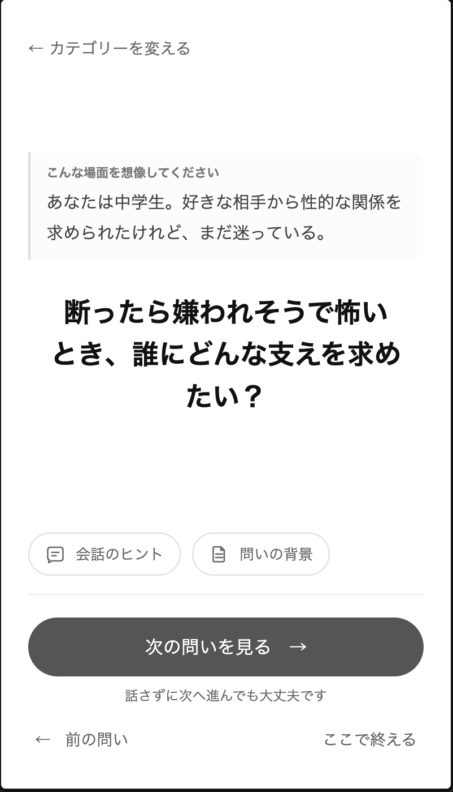

Omoi
違う考えを知るために。
人間関係から社会や倫理、人生の選択まで。正解のない問いをきっかけに、相手の考えと自分の考えを深める質問カードです。

正解を決めず、違う考えに出会う
Omoiは、身近な人と正解のない問いについて話すための質問カードです。相手の答えを評価したり、同じ考えにそろえたりするのではなく、「どうしてそう思う？」を通じて、お互いの考えを知ることを大切にしています。
v2では、Levelと問題数を先に選ぶ流れから、今話したいことに近い4つのカテゴリを選び、問いを読み進める流れに変わりました。場面文や会話のヒント、問いの背景を加え、前の問いに戻る・途中で終える操作も用意しています。
答えたくない問いは、話さずに次へ進めます。自分たちのペースで使えます。
| 話題を選ぶ | 「日常や自分のこと」「意見が分かれる身近な話」「社会や価値観について」「人生に関わる難しい選択」から選びます。 |
|---|---|
| 問いを読む | 場面を想像する文章と問いを読み、相手と話します。 |
| ヒントと背景 | 用意されている問いでは、「会話のヒント」や「問いの背景」を開けます。 |
| 利用 | 無料で、アカウント登録は不要です。 |
| 回答 | 会話の答えを入力・保存する機能はありません。 |
| 関連 | Omoi for seriesは、相手や場面に合わせて会話のきっかけを選ぶ別シリーズです。 |
質問を読む順に使い方



答えずに次の問いへ進むことも、前の問いに戻ることも、途中で終えることもできます。
Omoiについて
診断や採点をするサービスではありません。答えを強制せず、質問をきっかけに人と人が話すための道具です。無料で利用でき、アカウント登録は不要です。